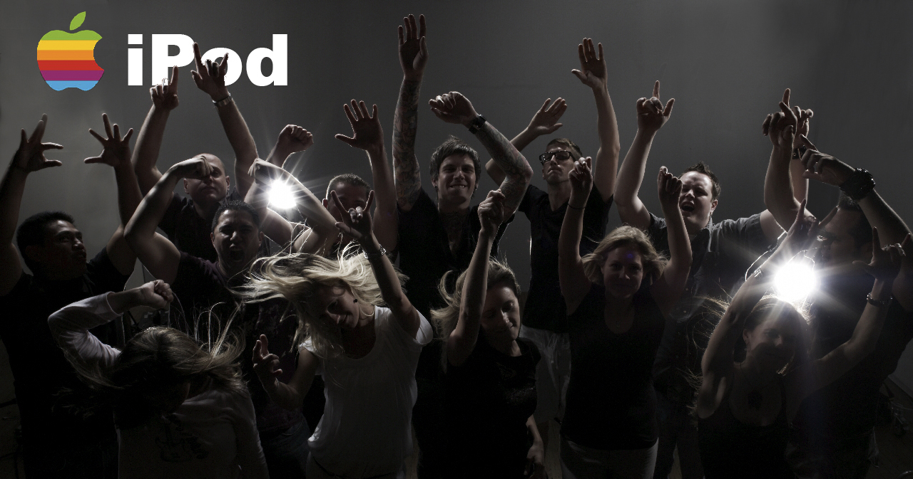
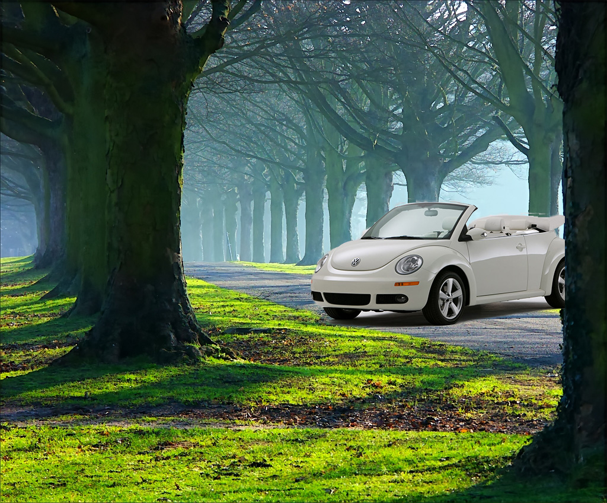
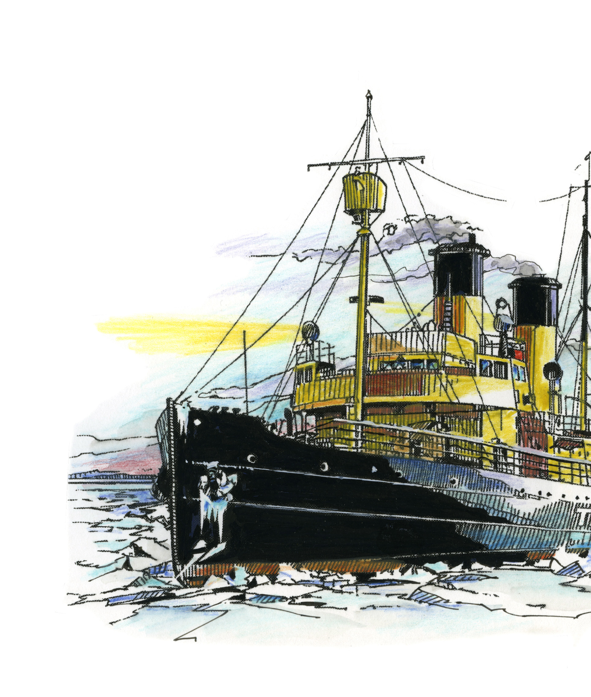
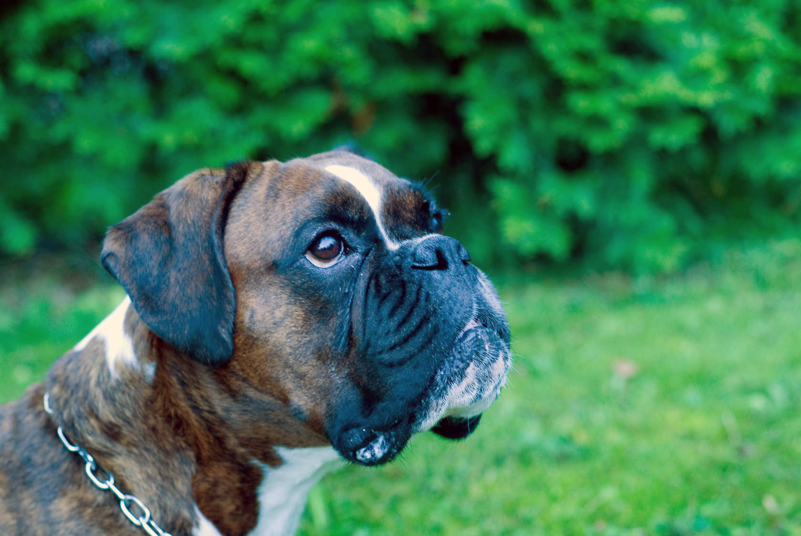
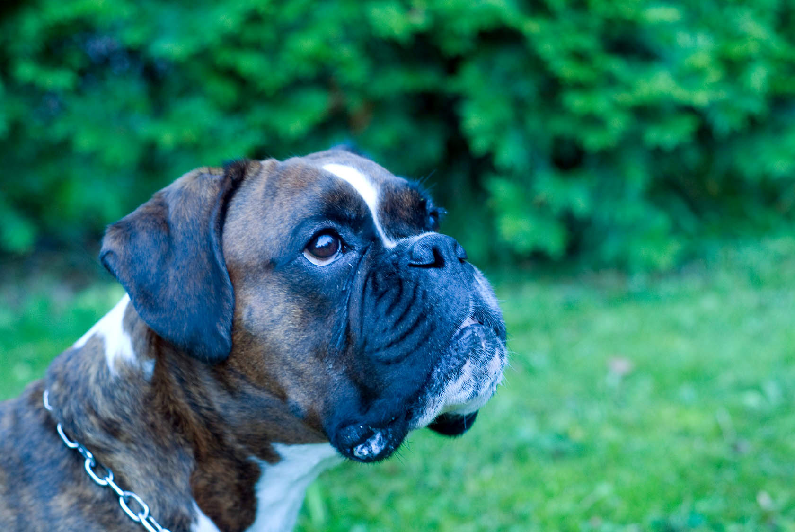
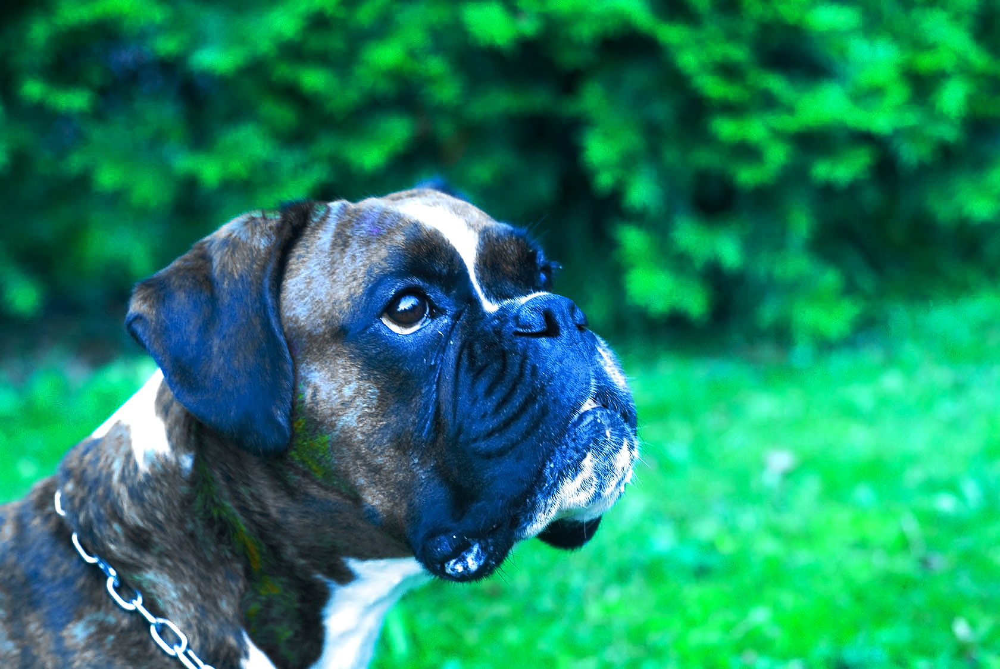

Assignment 1
iPod Ad

Nothing fancy, I have just drag the icon and dropped it on the main pic then put the layer of the logo below the people image
Car in the background

After selecting the image with polygonal lasso tool i have inverted the image then simply used the curves tool to put the background all the way down . After getting the kinda white background I was looking for I have used the brush tool to make them go together.Then chose the levels tool (which I also used to touch the image a bit by balancing the RGB channels individually )
Assignment 2

After selecting the image with polygonal lasso tool i have inverted the image then simply used the curves tool to put the background all the way down . After getting the kinda white background I was looking for I have used the brush tool to make them go together.Then chose the levels tool (which I also used to touch the image a bit by balancing the RGB channels individually )
Part 2
Auto color

Auto Color does not adjust channels individually but searches to identify shadows, midtones, and highlights and using the method of neutralizing midtone target RGB 128 gray adjusts the contrast and color.
Auto contrast

Auto Color does not adjust channels individually but searches to identify shadows, midtones, and highlights and using the method of neutralizing midtone target RGB 128 gray adjusts the contrast and color.
Auto Tone
The Auto option for Levels and Curves and the Auto Tone command automatically adjust the black point and white point in an image. This clips a portion of the shadows and highlights in each channel and maps the lightest and darkest pixels in each color channel to pure white and pure black. The intermediate pixel values are redistributed proportionately. As a result, using the Auto option or Auto Tone increases the contrast in an image because the pixel values are expanded. Because the Auto option and Auto Tone adjust each color channel individually, it may remove color or introduce color casts.
Touched

I have used different tools we have tried to study on the labs such as curves, levels, exposure, Vibrance and noise reduction to touch the dog image and I have added an unexpected kind of color texture to it, but that's only because I wanted to have a depth look